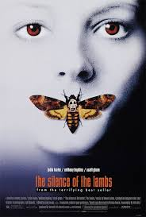

Favorite movies
The girl with the dragon tattooO thriller se passa na Suécia e conta a história da missão do jornalista Mikael Blomkvist para descobrir o que aconteceu com uma adolescente desaparecida há 40 anos. Para isso, ele recebe a ajuda da hacker Lisbeth Salander, uma jovem misteriosa e problemática. |
|

|
Clockwork OrangeAlex (Malcolm McDowell), o protagonista, é um sociopata carismático cujos interesses incluem música clássica (principalmente Beethoven), estupro e ultraviolência.O filme narra os terríveis crimes de sua gangue, sua captura e a tentativa de reabilitação através do controverso condicionamento psicológico. |
|  |
Silence of the lambsBaseado no romance homônimo de 1988 por Thomas Harris, o segundo a apresentar Hannibal Lecter, um psicopata assassino em série, que realizava canibalismo com suas vitimas. No filme, Clarice Starling, uma jovem estagiária do FBI, procura ajuda do prisioneiro Dr. Lecter para prender outro serial killer, conhecido apenas como "Buffalo Bill". |